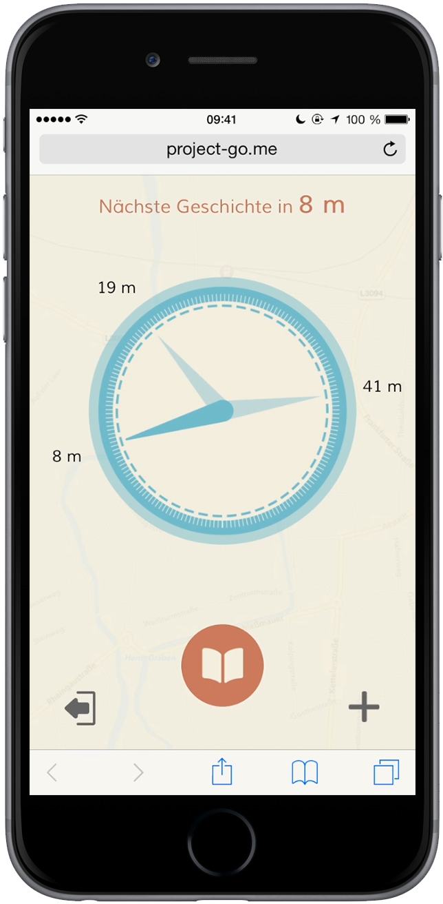

Project GO! ist eine digitale, persönliche und dynamische Stadtchronik an der der einfache Bürger teilnehmen kann. Er kann Vorort zurück in die Vergangenheit blicken, um die Gegenwart zu verstehen und seine eigene Gegenwart, was ihm in seiner Zeit wichtig ist, für die Nachwelt verewigen.
Die Besonderheit: Man kann Ereignisse nur Vorort lesen und bekommt mit Hilfe eines Kompasses die 3 nächsten Geschichten in seiner Nähe angezeigt. Vor allem für Kommunen und Städte eignet sich dies als ein dynamischer, persönlicher digitaler Stadtführer, welcher die Orte interessanter und erfahrbarer für beispielsweise Touristen macht.
Das ganze haben wir als Web-App entwickelt (angepasst für das iPhone 6) und kann mit einem Smartphone, welches GPS und einen digitalen Kompass hat einfach über den Webbrowser aufgerufen werden.
Bei der Entwicklung habe ich mich größten Teils mit dem Design und dem Management (Vertrieb, Finanzierung) beschäftigt. In der Informatik habe ich nur etwas, auf Grund von Zeitdruck, helfen können, bin aber über die Abläufe und Funktionen genauestens informiert.
Hinweis zur Webapp: Öffnen sie diese bitte auf einem Smartphone. Wenn Sie sich registrieren, bitte verwenden Sie kein echtes Passwort, da es sich hierbei nur um einen Prototypen handelt.
Zur Webapp
